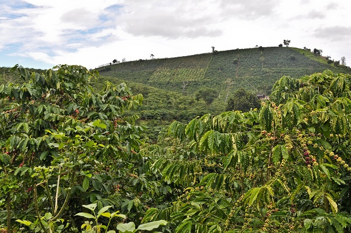

3 vùng trồng cà phê Arabica ngon nhất Việt Nam
Ở Việt Nam, khá nhiều nơi có khí hậu và thổ nhưỡng thích hợp với việc trồng cây cà phê. Nhưng đâu là vùng trồng trọt cho ra những trái cà phê Arabica ngon nhất trên thế giới, hẳn không nhiều người biết.
Theo chân các giáo sĩ người Pháp, cây cà phê đã có mặt ở nước ta từ thế kỷ 19 và phát triển mạnh mẽ cho tới ngày hôm nay. Hiện Việt Nam là nước có sản lượng cà phê xuất khẩu lớn nhất thế giới, với khoảng 900.000 –1.200.000 tấn/năm.
Nhưng trong 500.000 ha trồng cà phê của cả nước, chỉ có khoảng 35.000 ha cà phê Arabica, tập trung chủ yếu ở Lâm Đồng, Thừa Thiên Huế, Quảng Trị, Nghệ An, Hòa Bình, Sơn La, Điện Biên... Cà phê Arabica vốn là loại có giá trị kinh tế nhất trong các loài cà phê.
Trên thị trường cà phê Arabica luôn được đánh giá cao nhờ có hương vị thơm ngon. Giá cà phê Arabica cũng thường cao gấp đôi so với giá cà phê Robusta. Cà phê Arabica có nguồn gốc từ vùng cao nguyên nhiệt đới Ethiopia (Đông Phi). Brasil và Colombia là hai nước xuất khẩu chính loại cà phê này, với chất lượng được đánh giá cao nhất.
Cà phê Arabica được đánh giá là ngon và thường có giá cao gấp đôi cà phê Robusta và được trồng ở vùng đất cao từ 1000-1600m.
Cây cà phê Arabica thường được trồng ở độ cao từ 1.000 - 1.600 m. Cây có tán lớn, màu xanh đậm, lá hình oval. Hạt Arabica hơi dài, to hơn hạt Robusta. Dù có lượng cafeine chỉ bằng 1 nửa Robusta, nhưng cà phê Arabica có hương thơm nhẹ nhàng, vị chua thanh nên rất được ưa chuộng.
Đà Lạt “thiên đường” của cà phê Arabica
Khi nhắc đến những vùng đất trồng cà phê ở nước ta, người ta thường nghĩ ngay đến Tây Nguyên, hay còn gọi là Cao nguyên trung phần, nơi may mắn được tạo hóa ban cho diện tích đất đỏ bazan trù phú.
Đà Lạt “thiên đường” của cà phê Arabica
Cà phê Arabica được trồng ở các huyện như: Đơn Dương, Lâm Hà, Di Linh, Đức Trọng và một số vùng ngoại thành của thành phố Đà Lạt được đánh giá là có giá trị cao nhất Việt Nam. Thậm chí, hương vị sánh ngang với cà phê ngon nhất thế giới là Arabica Bourbon (Moka).
Vùng đất này được coi là “thiên đường” cà phê Arabica nhờ những “chỉ số vàng” như : độ cao 1.500 m so với mặt nước biển, khí hậu ôn đới mát quanh năm, nhiệt độ cực đại trong năm không vượt quá 33 độ, nhiệt độ cực tiểu 5 độ.
Điện Biên, Sơn La có lịch sử trồng cà phê Arabica cả trăm năm
Ở phía Bắc, khí hậu lạnh do chịu ảnh hưởng của gió mùa đông bắc, cùng lượng mưa lớn, mùa khô không rõ rệt, cũng là những lợi thế giúp cho cà phê Arabica sinh trưởng và phát triển. Nơi đây cũng đã hình thành nên những vùng cà phê có hương vị rất tuyệt như ở huyện Yên Bình, thuộc tỉnh Yên Bái.
Vùng Tây Bắc, cà phê được trồng ở các tỉnh như Sơn La, Điện Biên cũng được khách hàng quốc tế đánh giá rất cao nhờ có thổ nhưỡng tương tự như vùng Sao Paulo của Brasil, có khác chăng chỉ là 2 vùng cà phê nằm này ở phía Bắc và phía Nam bán cầu.
Ngoài Tây Nguyên, ở Việt Nam còn có vùng cà phê Arabica Tây Bắc đã có lịch sử cả trăm năm.
Đặc biệt cà phê Chiềng Ban, Sinh Ban( Sơn La), tuy không được trồng ở vùng đất đỏ bazan và không nằm ở độ cao lý tưởng như các tỉnh Tây Nguyên, song Sơn La có những loại đất trong nhóm đất đỏ vàng thích hợp với cây cà phê như Fk, Fv, Fs… Lại nằm ở vĩ độ khá cao về phía Bắc (20039’ – 22002’ vĩ độ Bắc) nên không phải tưới nước, nhưng cây cà phê Arabica vẫn có sức sống rất mãnh liệt. Nhiều cây vài chục năm tuổi, thân to, tán rộng mà hạt cà phê có hương vị không hề thua kém so với giống cây mà người Pháp đã trồng ở Lâm Đồng từ những năm 30 của thế kỷ trước.
Quảng Trị, Nghệ An cà phê Arabica với hương thơm sâu lắng
Khu vực Trung bộ nước ta cũng có những vùng đất như: Khe Sanh (Quảng Trị), Phủ Quỳ (Nghệ An) rất thích hợp với loại cà phê Arabica, đặc biệt là giống Catimor (loại được lai giữa chủng Caturra với Hybrid de Timor). Cùng thuộc họ Arabica, tuy không có vị ngọt đậm như Bourbon nhưng Catimor lại có hương thơm sâu lắng và vị chát, mặn.
Ngày nay, ngoài những giống Arabica truyền thống, được trồng từ trước, mới đây, Viện Khoa học Kinh tế Nông Lâm Nghiệp Tây Nguyên đã lai tạo ra nhiều giống cà phê Arabica có năng suất và chất lượng cao.
Trong đó, hai giống lai TN1, TN2 có năng suất cao và chất lượng tốt đã được Bộ Nông nghiệp và Phát triển Nông thôn cho phép khu vực hoá canh tác. Các giống cà phê Arabica lai mới này có đặc tính cây sinh trưởng khỏe, phân cành nhiều. Năng suất đạt từ 4 - 5 tấn cà phê nhân/ha, kích cỡ hạt lớn, trọng lượng 100 nhân trên 15 - 17gram, kháng cao đối với bệnh gỉ sắt...
Cà phê Arabica của Việt Nam rất được các thương hiệu cà phê nổi tiếng nhất trên thế giới ưa chuộng.
Như vậy, cùng là cây cà phê Arabica, nhưng ở mỗi vùng trồng đặc trưng ở nước ta lại tạo ra những hương vị cà phê rất riêng để chinh phục những người sành về ẩm thực nhất trên thế giới. Chính vì lý do này, cà phê Arabica của Việt Nam ngày càng được các thương hiệu cà phê nổi tiếng nhất trên thế giới lựa chọn, trong đó có thương hiệu Purio Coffee.
Nguyễn Thanh Tình - PHP39 (Sưu tầm)